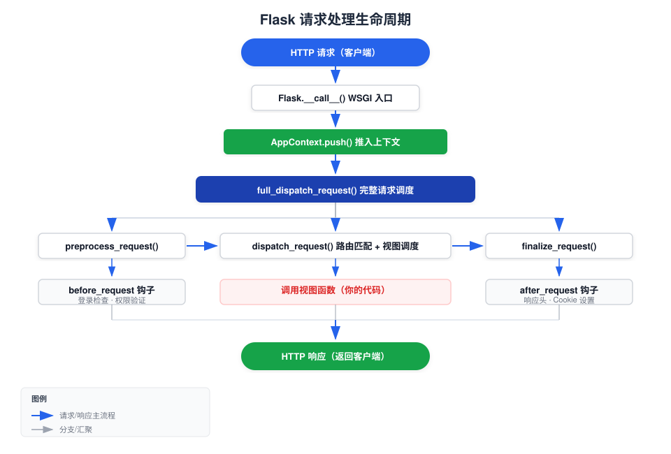

Flask 请求生命周期
Flask リクエストの完全なライフサイクルを理解することは、Flask アプリケーションを上手に書くための鍵です。
この章では、ソースコードレベルで HTTP リクエストがサーバーに入ってからレスポンスを返すまでの全プロセスを分解し、明確な実行モデルを構築するのに役立ちます。
リクエストライフサイクルとは
リクエストライフサイクル（Request Lifecycle）とは、HTTP リクエストが Flask 内部で経る一連の処理プロセスのことです。
以下の段階が含まれます：リクエスト受信 → コンテキスト作成 → 前処理 → ルーティング → ビュー実行 → レスポンス構築 → コンテキスト解放 → レスポンス返却。
このプロセスを理解すれば、以下の質問に正しく答えられるようになります：
- gオブジェクトのデータはいつ利用可能になり、いつクリーンアップされるのか？
- before_request 和 after_requestの実行順序は？
- 例外発生時にはどの処理ステップを順に経るのか？
- なぜビュー関数の外で を使用するとrequestエラーになるのか？
全体フローチャート
次の図は、Flask がリクエストを受信してからレスポンスを返すまでの完全な呼び出しチェーンを示しています：

ステップごとの詳細解説
第1段階：WSGI エントリポイント
HTTP リクエストがサーバーに到達すると、WSGI サーバー（Gunicorn、Werkzeug 開発サーバーなど）が Flask アプリケーションインスタンスを呼び出します。
Flask は を実装しており、__call__メソッドを実装し、正当な WSGI アプリケーションになっています：
例
# WSGI サーバーは次のようにアプリケーションを呼び出します：
# response = app(environ, start_response)
class Flask(App):
def __call__(self, environ, start_response):
"""WSGI サーバーが呼び出すエントリポイント"""
return self.wsgi_app(environ, start_response)
def wsgi_app(self, environ, start_response):
"""実際の WSGI 処理ロジック"""
# ステップ1：environ からリクエストコンテキストを作成
ctx = self.request_context(environ)
try:
ctx.push() # コンテキストスタックにプッシュ
response = self.full_dispatch_request(ctx) # 完全なディスパッチ
except Exception as e:
response = self.handle_exception(ctx, e) # 例外のフォールバック
finally:
ctx.pop(error) # コンテキストをポップしてクリーンアップを実行
return response(environ, start_response)
Flask はエントリポイントを の呼び出しとして設計し、wsgi_appメソッドを使用します（直接 で__call__ロジックを書くのではありません。これにより、 を置き換えることでapp.wsgi_appミドルウェアを挿入でき、 へのappインスタンス自体の呼び出しには影響しません。
第2段階：コンテキストの作成
request_context(environ)WSGI 環境変数に基づいて を作成します。AppContextオブジェクト。
このオブジェクトには現在のリクエストのすべての情報が含まれており、スタックにプッシュされると、request、session、g、current_appこれらのグローバルプロキシが現在のリクエストのデータを指し始めます。
例
from flask import Flask, request, current_app
app = Flask(__name__)
with app.app_context():
# アプリケーションコンテキストのみ——current_app は利用可能、request は利用不可
print(current_app.name) # ✓ 正常
# print(request.method) # ✗ エラー：Working outside of request context
with app.test_request_context("/hello?name=runoob"):
# リクエストコンテキストにはアプリケーションコンテキストも含まれる——両方利用可能
print(current_app.name) # ✓ アプリ名を出力
print(request.path) # ✓ /hello を出力
print(request.args["name"]) # ✓ runoob を出力
| コンテキストの種類 | 作成タイミング | 破棄タイミング | 利用可能なグローバル変数 |
|---|---|---|---|
| アプリケーションコンテキスト | リクエスト到達時 / 手動 with app.app_context() | リクエスト終了 / with ブロック終了 | current_app, g |
| リクエストコンテキスト | リクエスト到達時 / 手動 with app.test_request_context() | リクエスト終了 / with ブロック終了 | request, session（アプリケーションコンテキストのすべての変数を含む） |
初心者が最も犯しやすい間違いは、モジュールレベルで直接 にアクセスすることです。request。覚えておいてください：requestはリクエストコンテキスト内でのみ存在します。ビュー関数の内部（またはそこで呼び出される関数）でのみアクセスできます。
第3段階：preprocess_request（前処理）
コンテキストが準備完了すると、full_dispatch_request最初に を呼び出します。preprocess_request。
この段階では、 を使用して@app.before_request登録されたすべての関数を実行します。
いずれかのbefore_request関数が 以外のNone値を返した場合、Flask はそれを最終レスポンスとみなし、後続のビュー関数の実行をスキップします。
例
app = Flask(__name__)
app.secret_key = "dev-secret"
@app.before_request
def check_authentication():
"""各リクエストの前にユーザーがログインしているか確認"""
# ログイン・登録ページの認証チェックをスキップ
if request.endpoint in ("login", "register", "static"):
return None # None は通常フローを継続することを示す
# 未ログインの場合、リダイレクトレスポンスを直接返す（ビュー関数をスキップ）
if "username" not in session:
return redirect(url_for("login"))
# ユーザーがログイン済みのため、正常に続行
return None
@app.route("/login", methods=["GET", "POST"])
def login():
if request.method == "POST":
session["username"] = request.form["username"]
return redirect(url_for("dashboard"))
return '<form method="post"><input name="username"><input type="submit"></form>'
@app.route("/register")
def register():
return "登録ページ（ログイン不要）"
@app.route("/dashboard")
def dashboard():
return f"ようこそ {session['username']}、RUNOOB コンソールへ"
第4段階：dispatch_request（ルーティング）
前処理が完了すると、Flask はコアとなるディスパッチ段階に入ります：
- URL を対応するルーティングルールにマッチング（Rule）
- URL 内の変数パラメータを抽出（view_args）
- 抽出したパラメータを渡して対応するビュー関数を呼び出します
例
def dispatch_request(self, ctx):
req = ctx.request
# マッチしたルーティングルール（Rule オブジェクト）を取得
rule = req.url_rule
# URL 内の変数パラメータを取得。例：/post/42 → {"post_id": 42}
view_args = req.view_args
# view_functions ディクショナリから対応する関数を見つけて呼び出す
return self.view_functions[rule.endpoint](**view_args)
マッチングに失敗すると がスローされ、RoutingException、最終的にエラーハンドラによって捕捉され、404 が返されます。
第5段階：ビュー関数の実行
ここがビジネスロジックを書く場所です。Flask はビュー関数を呼び出し、戻り値を取得します。
戻り値は文字列、辞書、タプル、Response オブジェクトなど複数の型を取ることができ、これらはすべて次の段階で統一的に処理されます。
第6段階：finalize_request（レスポンス構築）
ビュー関数の実行が完了すると、finalize_requestは戻り値を標準の に変換します：Responseオブジェクト：
例
def finalize_request(self, ctx, rv):
# 1. make_response を呼び出して、さまざまな型の戻り値を Response オブジェクトに変換
response = self.make_response(rv)
# 2. process_response を介して after_request フックを実行
response = self.process_response(ctx, response)
# 3. シグナルを送信：request_finished
request_finished.send(self, response=response)
return response
make_responseの変換ルール：
| 戻り値の型 | 変換方法 |
|---|---|
| str / bytes | レスポンスボディとして使用、Content-Type: text/html |
| dict / list | jsonify() を呼び出し、Content-Type: application/json |
| tuple | (body, status) または (body, headers) として解析 |
| Response オブジェクト | そのまま使用 |
| iterator / generator | ストリーミングレスポンスとして |
第7段階：after_request フック
process_responseを実行した後、make_responseすべての を順に呼び出します。@app.after_request登録された関数。
各after_request関数は を受け取り、返します。Responseオブジェクト。レスポンスヘッダーの変更、Cookie の追加などができます。
例
@app.after_request
def add_security_headers(response):
response.headers["X-Content-Type-Options"] = "nosniff"
response.headers["X-Frame-Options"] = "DENY"
response.headers["X-XSS-Protection"] = "1; mode=block"
return response # response オブジェクトを返す必要がある
# CORS ヘッダーの追加にもよく使われる
@app.after_request
def add_cors_headers(response):
response.headers["Access-Control-Allow-Origin"] = "*"
response.headers["Access-Control-Allow-Methods"] = "GET, POST, PUT, DELETE"
return response
第8段階：コンテキストのクリーンアップ
レスポンス送信後、finallyブロック内のctx.pop()コンテキストのクリーンアップを実行します：
- すべての ... を呼び出しteardown_request登録済み関数（リクエストの成功・失敗にかかわらず実行されます）
- すべての ... を呼び出しteardown_appcontext登録済み関数
- ... を送信request_tearing_down 和 appcontext_tearing_downシグナル
- ... を解放gオブジェクトに保存されているすべてのデータ
例
@app.teardown_appcontext
def close_database_connection(error):
"""リクエストでエラーが発生しても、データベース接続が確実に閉じられるようにする"""
db = g.pop("db", None)
if db is not None:
db.close()
# error パラメータ：リクエスト処理中に例外が発生した場合、ここで受け取ります
if error:
app.logger.warning(f"リクエスト例外が発生しました。データベース接続を閉じました: {error}")
# teardown と after_request の違い
@app.after_request
def after(response):
# after_request は通常のフローで実行され、例外時には実行されない
# 成功したレスポンスの変更に使用する
return response
@app.teardown_request
def teardown(error):
# teardown は常に実行される——リクエストの成功・失敗にかかわらず
# リソースのクリーンアップに使用する（ファイルを閉じる、ロックを解放するなど）
pass
例外処理フロー
ビュー関数が例外をスローすると、Flask には専用の例外処理パスがあります：
- full_dispatch_request例外をキャッチ
- ... を呼び出しhandle_user_exception例外のタイプを判定
- HTTP 例外（例：abort(404)）→ 対応する ... を検索errorhandler
- 通常の例外 → 例外クラスの ... を検索errorhandler
- ハンドラーが見つからない → ... を呼び出しhandle_exception、500 エラーを返す
- 例外の有無にかかわらず、最終的に ... を経由しますfinalize_requestレスポンスの構築
例外パスの重要なポイント：after_requestフックはエラーレスポンスに対しても実行されます（Flask 1.1 以降）が、before_request返された非 None 値はフロー全体をショートサーキットし、後続のビュー関数とフックは実行されません。
フック関数クイックリファレンス
| フック | 登録方法 | 実行タイミング | 典型的な用途 |
|---|---|---|---|
| before_request | @app.before_request | ルートディスパッチ前 | ログインチェック、リクエストログ、権限検証 |
| before_first_request | @app.before_request（非推奨） | 最初のリクエスト前（1回のみ） | 初期化操作（ファクトリーパターンへの変更を推奨） |
| after_request | @app.after_request | レスポンス構築後、送信前 | レスポンスヘッダー、CORS、ログの追加 |
| teardown_request | @app.teardown_request | リクエストコンテキストがポップされる時（常に実行） | リソースの解放、ファイルを閉じる |
| teardown_appcontext | @app.teardown_appcontext | アプリケーションコンテキストがポップされる時（常に実行） | データベース接続のクローズ、キャッシュのクリーンアップ |
| errorhandler | @app.errorhandler(code) | 対応するエラーコード/例外が発生した時 | カスタムエラーページ |
シグナルイベント
Flask は ... を使用しますblinkerライブラリが重要なポイントでシグナルを送信します：
例
app = Flask(__name__)
# シグナルに接続——リクエスト到着時に記録
@signals.request_started.connect_via(app)
def log_request_start(sender, **extra):
print("リクエスト開始")
# シグナルに接続——リクエスト完了時に記録
@signals.request_finished.connect_via(app)
def log_request_end(sender, response, **extra):
print(f"リクエスト終了、レスポンスステータスコード: {response.status_code}")
# シグナルに接続——例外をキャッチ
@signals.got_request_exception.connect_via(app)
def log_exception(sender, exception, **extra):
print(f"リクエスト中に例外が発生しました: {exception}")
| シグナル | トリガータイミング |
|---|---|
| request_started | リクエストコンテキスト確立後、前処理前 |
| request_finished | レスポンス構築完了後、送信前 |
| got_request_exception | リクエスト処理中に例外が発生した時 |
| request_tearing_down | リクエストコンテキストが破棄される時 |
| appcontext_pushed | アプリケーションコンテキストがスタックにプッシュされる時 |
| appcontext_popped | アプリケーションコンテキストがスタックからポップされる時 |
| message_flashed | flash() が呼び出された時 |
| template_rendered | テンプレートのレンダリングが成功した時 |
重要ポイントのまとめ
核心ルール：完全なリクエストライフサイクルにおいて、before_request → ビュー関数 → after_request → teardownこれら4つのノードは必ず順番に実行されます（teardown は常に実行され、最初の3つでエラーが発生しても関係ありません）。
その他の拡張リクエストライフサイクルを理解すると、Flask アプリを書くときに分かるようになります：認証ロジックは ... に置き、before_request、ビジネスロジックはビュー関数に、レスポンスヘッダーの変更は ... に置き、after_request、リソースのクリーンアップは ... に置くteardown。
クリックしてノートを共有
<p style="font-size:14px;">ノートは本記事の内容を拡張したものである必要があります！</p><br> <p style="font-size:12px;"><a href="../tougao.html" target="_blank">記事の投稿はこちらをクリック</a></p> <p style="font-size:14px;"><a href="../w3cnote/runoob-user-test-intro.html" target="_blank">登録招待コードの取得方法</a></p> <h3 class="text-muted"><i class="fa fa-info-circle" aria-hidden="true"></i> ノート共有前には<a href=";.html" class="runoob-pop">ログイン</a>が必要です！</h3> <p><a href="../w3cnote/runoob-user-test-intro.html" target="_blank">登録招待コードの取得方法</a></p>